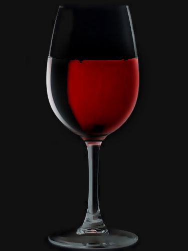
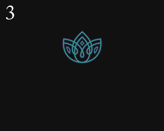

Lecture the last
– adapted from Huckleberry FinnIdeas.
Modern technology.
Ideas.
"If we want to get our ideas into other people's brains, we need a new kind of literacy, a literacy of design."
– David KadavyDesign with intent.
Typography
What's the point?
What's the point?
Type should be invisible. – Beatrice Warde
Good typography reinforces the meaning of the text. Type should not always be invisible, it should be appropriate. – Mark Boulton
Type conveys tone
 |
 |
Reader attention
Anatomy
Activity
Draw letterforms and add labelsActivity
Activity
Activity
Activity
Activity
Font design
Uses the same design principles
Font design
Devenagari fonts are designed too

Font design
Devenagari fonts are designed too

Type and imagery
Using design principles


Type and imagery
Using design principles to match three features
| Structure | Form | Details | ||
Type and imagery
Closure and consistent stroke lines
Type and imagery
Handwritten, loopy feel
Type and imagery
Thick stroke, similar curves
Type and imagery
Use type to capture the essence of something

Consistent stroke, "hard" rock
Quiz!
Match the company names with their logos.
 |
 | ||
 |
|||
Quiz!
Match the company names with their logos.
 |
|
|||
Tips
- Readable at all scales
- Conveys the message
Individual activity: Logo font
Find a font to match the logo.
The company name is in the file name: NAME-description.jpg
You can only use fonts from www.fontsquirrel.com
Process
- 5 min: Analyze the logo's structure, form, and detail
- 10 min: Research 3 options for the logo font
- 5 min: Peer discussion
- 5 min: Use software to place the font on a black background underneath the logo
Review
- What design elements did you see in the logo?
- What design elements are consistent in the logo and font?
- Inconsistencies?
Typography in content
Typefaces
- Serif
- Sans serif
- Script
Humanist, old style
Emulates calligraphy
Contrasting strokes
Traditional and classical
Transitional
Sharper serif than humanist
More ontrasting strokes
Strong, stylish, dynamic
Modern
Thin, horizontal serif
High contrasting strokes
Structured, clear, sharp
Slab (Egyptian)
Heavy, boxy serif
Low contrasting strokes
Authoritative yet friendly, bold, assertive
Sans serif.
Humanist
Emulates calligraphy
Contrasting strokes
Contemporary, humane
Transitional or Grotesque
Upright, uniform characters
Strong strokes
Unassuming, modern
Geometric
Geometric shapes
Uniform stroke
Strict, objective
Script
Script
Script

Quiz!
1. Modern sans
2. Script
3. Humanist sans
4. Geometric sans
Comic sans is ugly
– all designersDoes not use consistent design principles
Comic sans is not well designed.
Unbalanaced
Type conveys tone
What tone does this convey?

3-part activity
- Fotomango: Create a postcard-sized list of reviews for the photography company
- Bisonbegi: Create a postcard-sized restaurant menu
- Deadeye: Create a postcard-sized band tour dates schedule
3-part activity
Text will be given to you
- Part 1: Find a font to convey the most important message
- Part 2: Find a secondary font to convey the sub-dominant elements
- Part 3: Lay out the postcard using visual hierarchy
Part 1: Type matching
Find a font to convey the most important message in a list of text
Analyzing visual hierarchy
- Read the text
- Analyze the structure of the information. What are the repeating elements of the text? (e.g. title, date, price)
- Assign values (eg. 1-5) according to their importance.
- Brainstorm three types of tone you want to convey with your font choice
Part 1:Type matching
Finding a font
- Use Google Web Fonts to find 3 possible font choices for the most important element (#1) in the text.
- Peer discussion
- Choose one font. Put the most important element (#1) in the postcard.svg file with this font. (Don't worry about the placement or other text for now.)
- Also place your logo and logo font in the postcard (Again, placement and layout will happen in part 3).
- Pair discussion
Mixing fonts
Pleasing
...or disastrous
- Really easy: Use one font family.
- Easy: Find a serif and sans-serif within the same sub-classification.
- Less easy but makes for an interesting design: Find two very contrasting fonts.
Mixing fonts: font family
Style and structure are already the same
| PT Sans | PT Serif |
Mixing fonts: font family
Style and structure are already the same
Mixing fonts: serif / sans
Use a serif and a sans from the same type sub-class
Humanist: Cardo and Open sans
Mixing fonts: serif / sans
Use a serif and a sans from the same type sub-class
Transitional: Lora and Lato
Mixing fonts: contrasting
Go big or go home
Mixing fonts: contrasting
Go big or go home
Mixing fonts: contrasting
Go big or go home
Mixing fonts: guidelines
- No more than 2 fonts in one piece. Seriously.
- Don’t change fonts mid-sentence.
Part 2: Pairing fonts
Find a font for information ranked #2 and lower and your hierarchy
- Select 3 different pairings with the font you selected in part 1. Try to use at least 2 different methods we discussed.
- Peer discussion
- Choose one font. Put the elements in the postcard.svg file with this font. (Don't worry about the placement or other text for now.)
- Pair discussion
Review
- What are the ways of mixing fonts?
- How do you find two contrasting fonts?
Layout
- Readability
- Hierarchy
Readability: alignment
| Right | Left | Center |
Readability: alignment
Line height
120% - 145% letter height
Margins
Don’t skimp on margins! Eye needs white space to follow textHierarchy
Size, color, spacing

- Things that are the same level in the hierarchy should look the same.
- Relate each new element to existing elements.
- Keep it simple.
- Use the white space.
Part 3: Layout
- Brainstorm 3 different ways to lay out the postcard. Remember to keep the visual hierarchy in tact.
- Peer discussion
- Pick 1 layout and compose in inkscape
- Pair discussion
- Additional refinements
Review!
- Matching type with images
- Matching type with other type
- Laying out a page